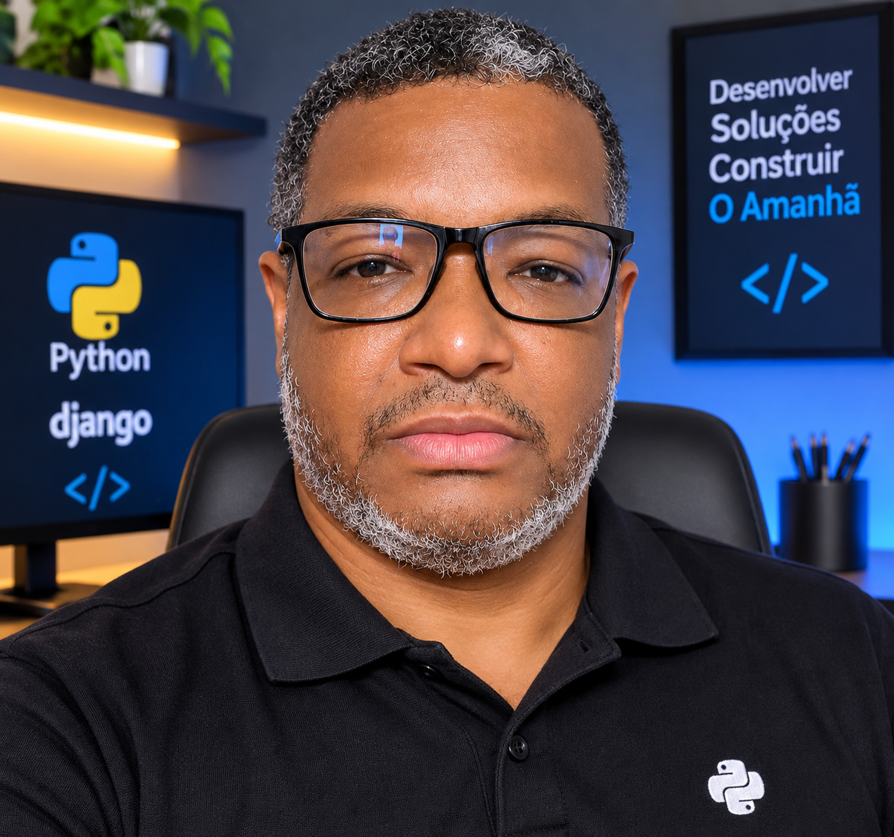

Quem sou eu ?
Meu nome é André Luiz de Souza, tenho 49 anos e sou natural de Nova Lima, Minas Gerais. Sou formado em Análise e Desenvolvimento de Sistemas e Desenvolvimento de Aplicativos Móveis, além de possuir pós-graduação em Desenvolvimento de Sistemas com Python. Sou apaixonado por tecnologia, programação e desenvolvimento web. Estou sempre em busca de novos conhecimentos, explorando linguagens de programação, ferramentas e frameworks para aprimorar minhas habilidades e acompanhar a constante evolução do mercado de tecnologia. Atualmente, estou desenvolvendo meu projeto pessoal, o ListaFácil, com previsão de lançamento ainda este ano. A plataforma tem como objetivo ajudar as pessoas a organizarem suas listas de compras, tarefas e atividades do dia a dia de maneira simples, prática e eficiente. Acredito que a tecnologia é uma poderosa ferramenta para transformar ideias em soluções que facilitam a vida das pessoas. Por isso, sigo dedicado ao aprendizado contínuo, ao desenvolvimento de projetos próprios e à construção da minha trajetória como desenvolvedor de software.
Minhas Metas para este ano:
- Estudar HTML, CSS e JavaScript
- Concluir meu projeto pessoal listaFacil
- Participar de hackathons e competições de programação
- Ganhar meus primeiros reais com freelancing
- Contruir um portfólio profissional
- Publicar meu primeiro artigo sobre programação
Pessoas que eu gostaria que estivessem no Devclub
- Rosangela
- Rosilaine
- Claudia
- Rafael
- Vinicius
